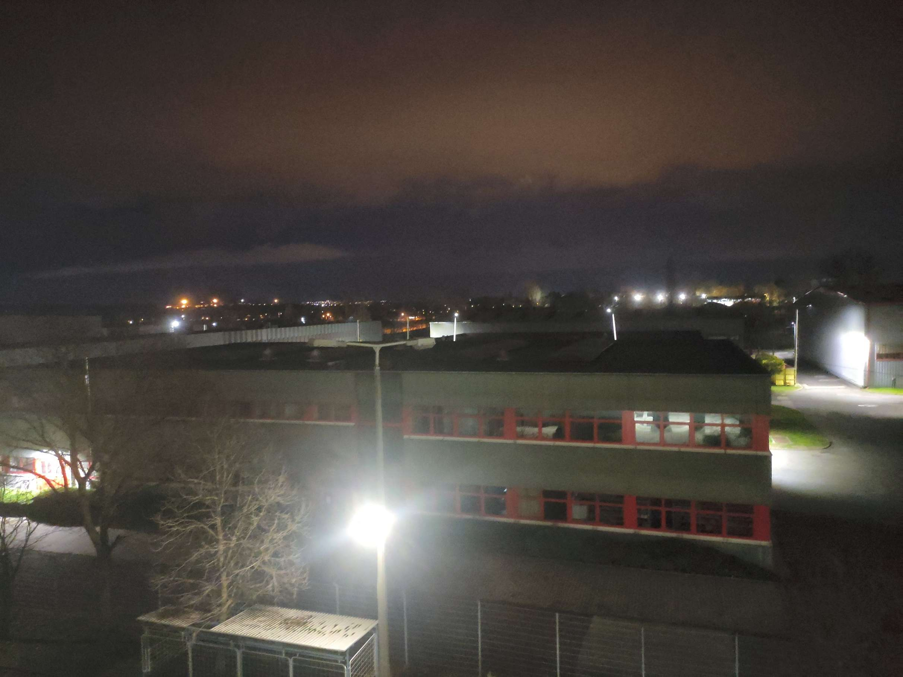

Az egyetemi évek során a kollégiumok kiemelt szerepet játszanak a közösségi élet és a személyes kapcsolatok
kialakításában. A Tarkaréti Kollégium ebben a tekintetben kivételes lehetőségeket kínál, hiszen fiatalos és
barátságos atmoszférája ideális helyszín a barátságok elmélyítésére, valamint az egyetemi közösségbe való
aktív bekapcsolódásra.
Az itt élők számos közös programban vehetnek részt, amelyek nemcsak a kikapcsolódást,
hanem az összetartozás érzésének erősítését is szolgálják. A sörpong bajnokságok, közös főzőcskék,
társasjáték estek és fergeteges bulik révén a lakók életre szóló élményeket szerezhetnek, miközben olyan
kapcsolatok születnek, amelyek az egyetem után is megmaradhatnak.
A 400 férőhelyes Tarkaréti Kollégium Budapest X. kerületének csendes,
zöldövezeti részén található, ami
egyszerre biztosít nyugodt környezetet és kiváló közlekedési lehetőségeket. A Kőbánya-Kispest és az Örs
vezér tere metrómegállók mindössze 15 perc alatt elérhetők, így a város többi része is könnyen
megközelíthető. Az épület folyamatos fejlesztése révén a lakók egyre komfortosabb és modernebb körülmények
között élhetnek. Az elmúlt évek során jelentős felújítások zajlottak, amelyeknek köszönhetően a kollégiumi
szobák nagy része megújult, és az infrastruktúra is megfelel a mai fiatalok igényeinek.
Alap információk
A kollégisták öt szinten, 3 ágyas szobákban kapnak elhelyezést. Minden szobában van internet-csatlakozási
lehetőség, emeletenként található női és férfi vizesblokk , és két villanytűzhellyel és mikrohullámú sütővel
ellátott konyha. Biztosítunk mosási-szárítási lehetőséget is.
A kollégiumi légkör nagyon sokban segít téged az egyetemi tanulmányaidban. A közös csoportoknak,
társaságoknak köszönhetően mindig van kitől segítséget kérni. A kollégium saját könyvtárral is rendelkezik,
ahol társasjátékok is kölcsönözhetők. Gépterem és tanulószoba is igénybe vehető.
Sportolási lehetőségként jól felszerelt konditerem várja az edzeni vágyókat.

Érdekességek
A Tarkaréti Kollégium Budapest X. kerületének egyik legkellemesebb, zöldövezeti részén helyezkedik el, amely
egyszerre nyújt csendes és harmonikus környezetet, valamint kiváló közlekedési lehetőségeket a főváros
bármely pontjára. A nyugalmat árasztó környezet ideális választás mindazok számára, akik szeretnék a városi
élet pezsgését egy otthonos, természetközeli helyen kipihenni. Az Örs vezér tere és Kőbánya-Kispest
metróállomások mindössze 15 perc alatt elérhetők, így a belváros is könnyedén megközelíthető akár tanulás,
akár szórakozás céljából. A közlekedés mellett a környék számos szabadidős tevékenységre is lehetőséget
biztosít, a közeli parkok, sportpályák és sétautak révén.
Az elmúlt években a kollégium átfogó fejlesztéseken esett át, amelyek célja a modern életvitelhez szükséges
feltételek megteremtése volt. Az épület jelentős része felújításra került, így a lakók tágasabb, világosabb
és kényelmesebb szobákban élvezhetik a mindennapokat. Az infrastruktúra is igazodik a mai kor igényeihez:
minden szoba rendelkezik nagy sebességű internettel, új bútorokkal, valamint az energiatakarékos
megoldásokra is kiemelt figyelmet fordítottak. A közösségi terek például a tanulószobák, a társalgók és a
modern konyhák is korszerűsítve lettek, hogy a hallgatók megfelelő környezetben készülhessenek a
vizsgáikra, vagy egyszerűen csak kikapcsolódhassanak.